Carrer Mossèn Amadeu Oller, 38 · Planta 5ª · 57 m² · 3 habitaciones
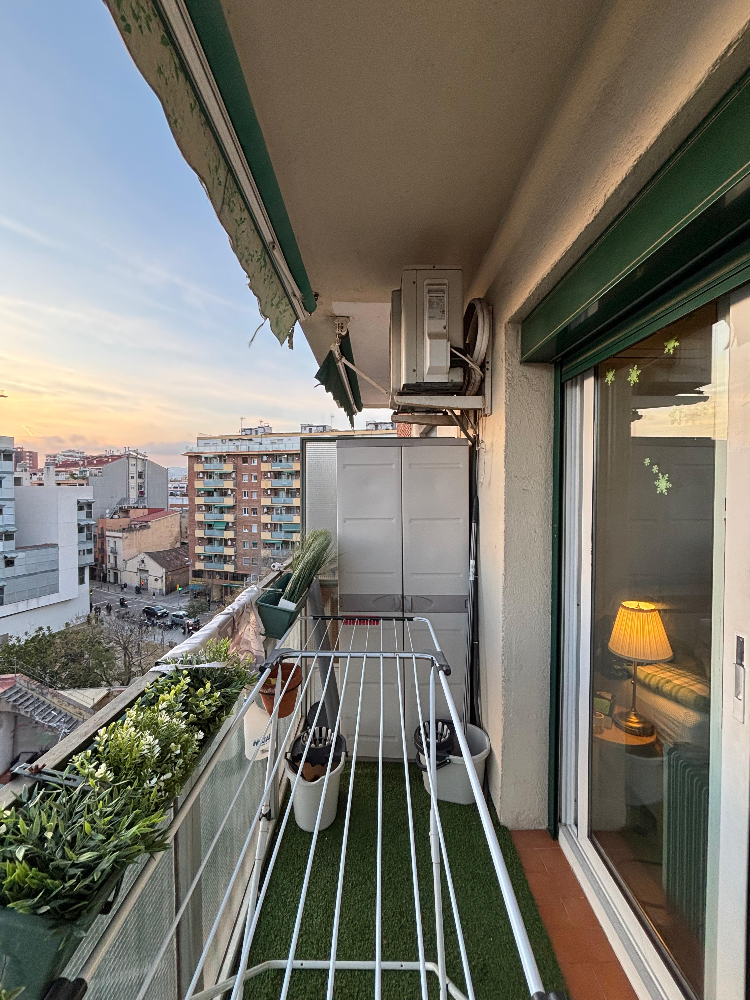
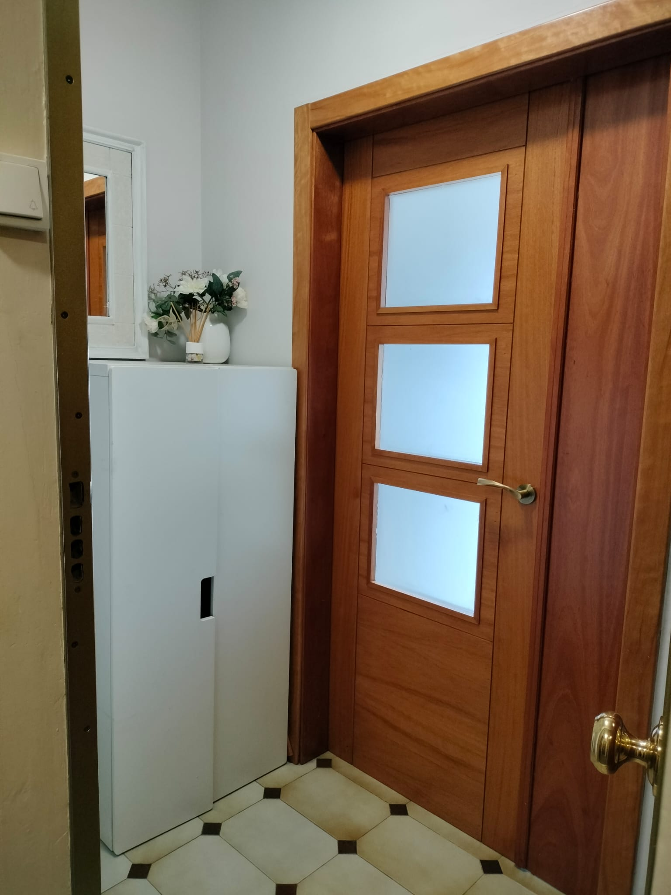
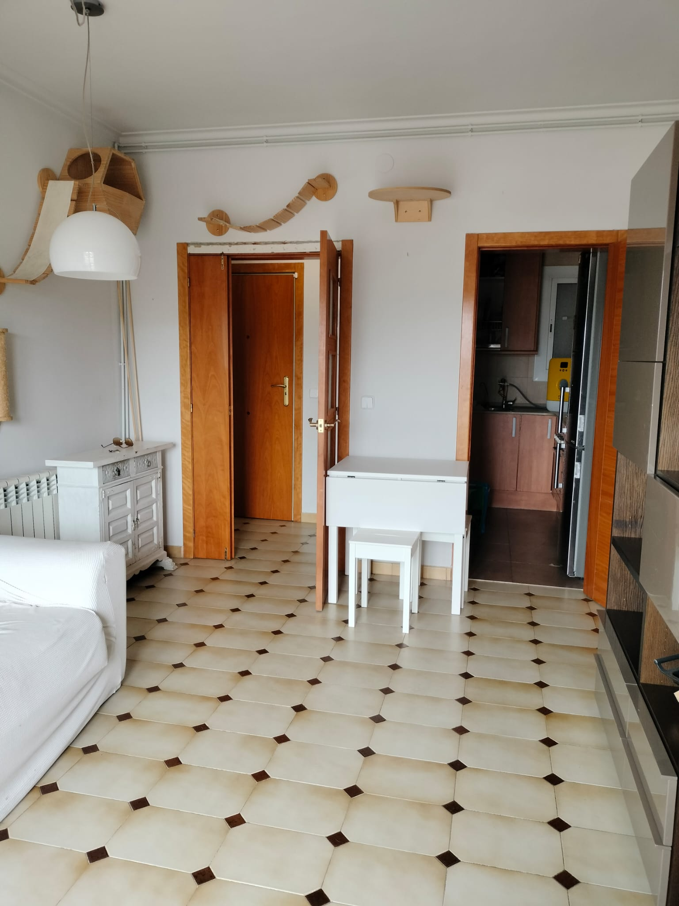
+12 fotosEl inmueble
Piso de 57 m² en planta 5ª con ascensor, distribuido en tres habitaciones, salón-comedor con acceso a balcón, cocina equipada, baño con plato de ducha, galería luminosa y amplio balcón con vistas despejadas al skyline de Barcelona. Suelo cerámico original en salón y un dormitorio, parquet en los otros dos dormitorios. Puertas interiores de madera de cerezo. Calefacción central por radiadores y aire acondicionado. Comunidad de vecinos de 60 €/mes, con muy buen ambiente en la finca.
Galería completa
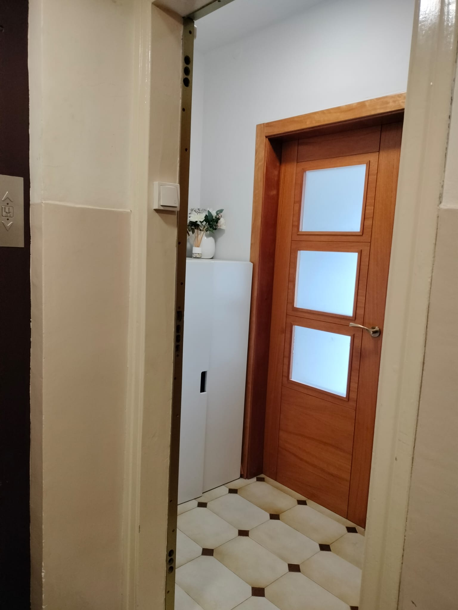
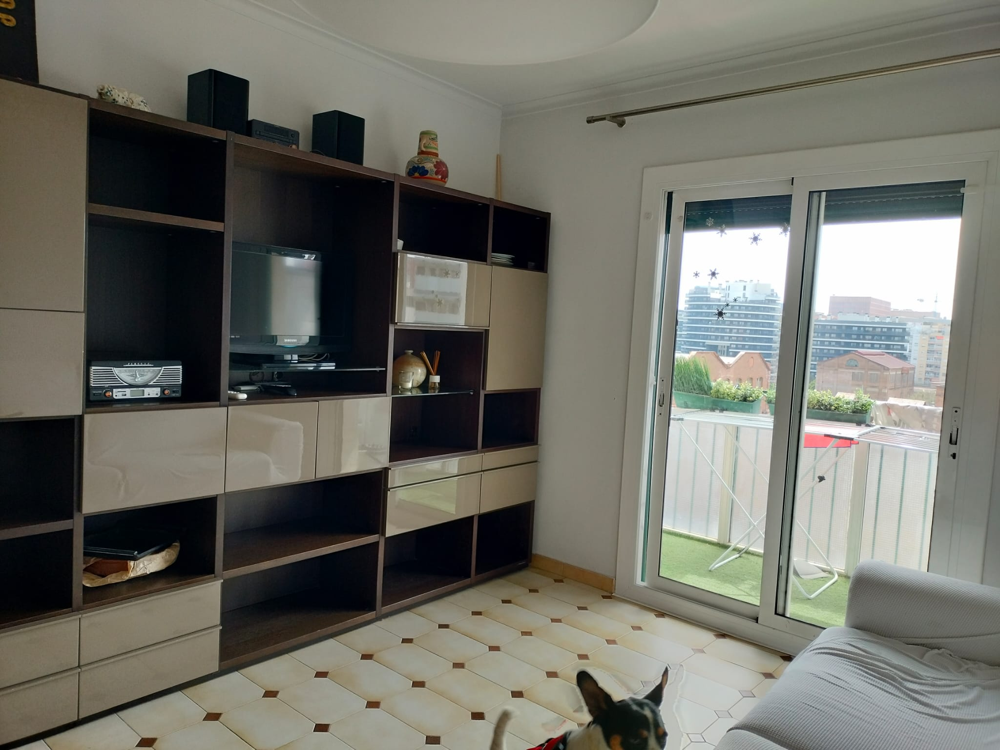
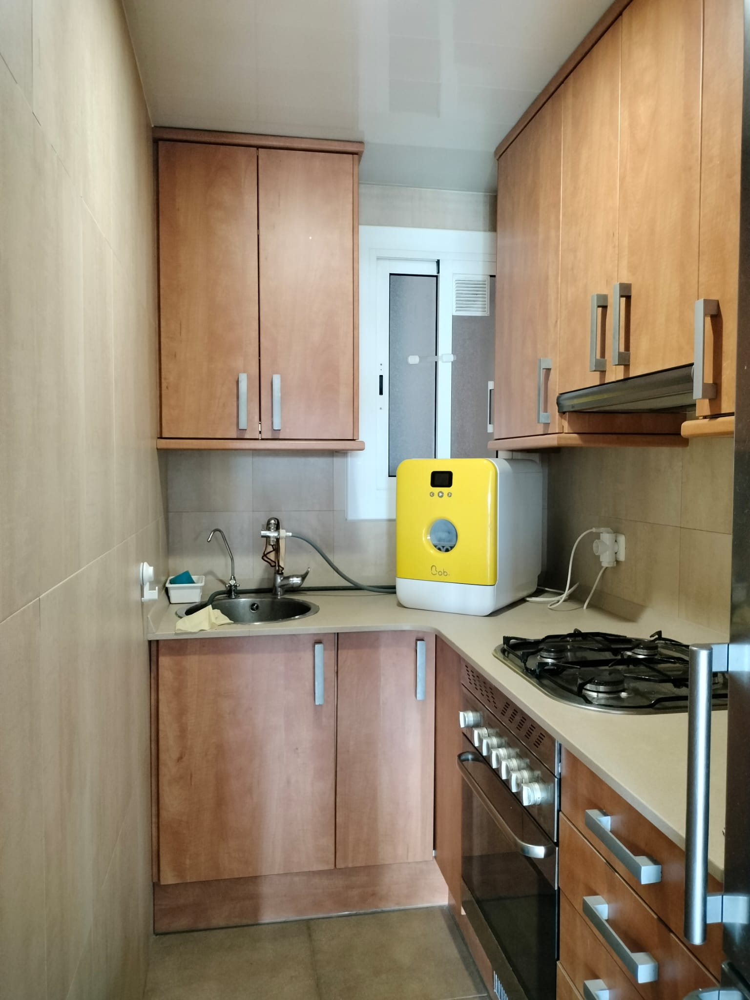
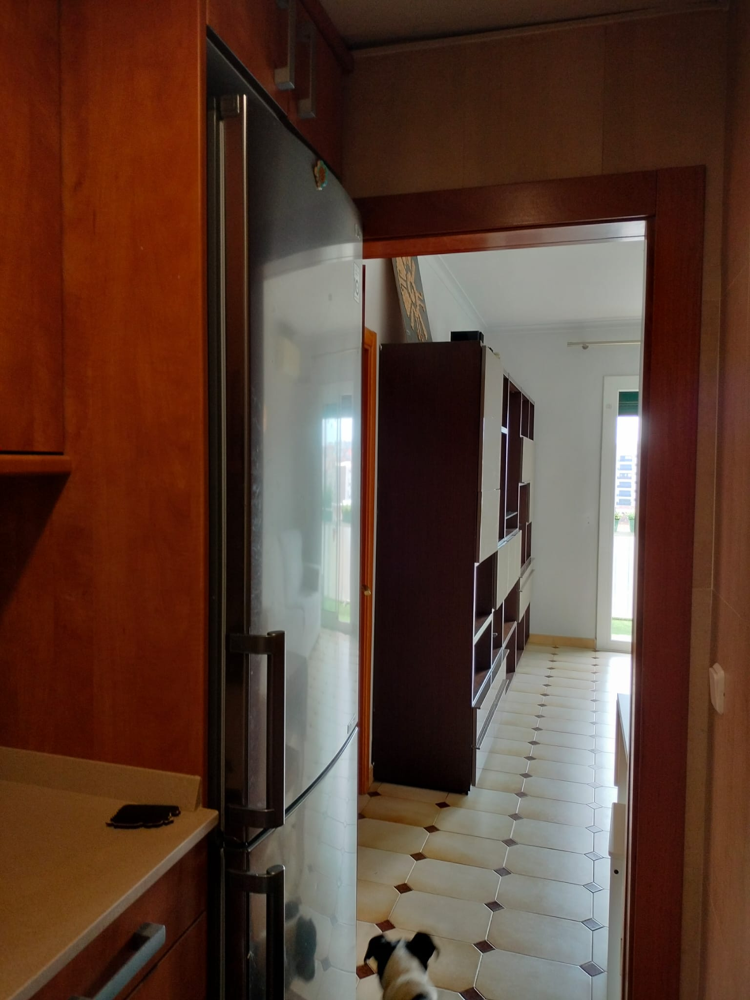
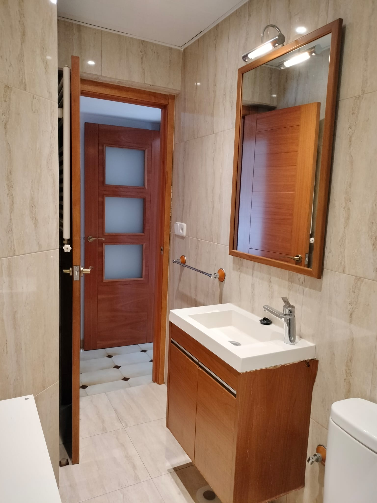
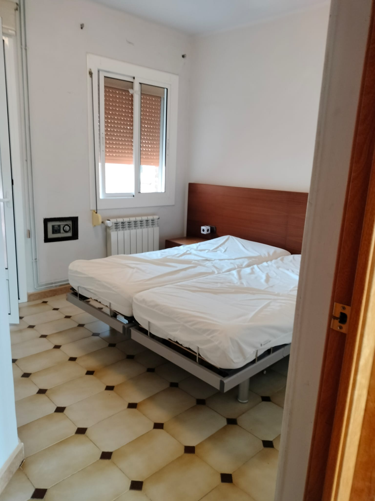
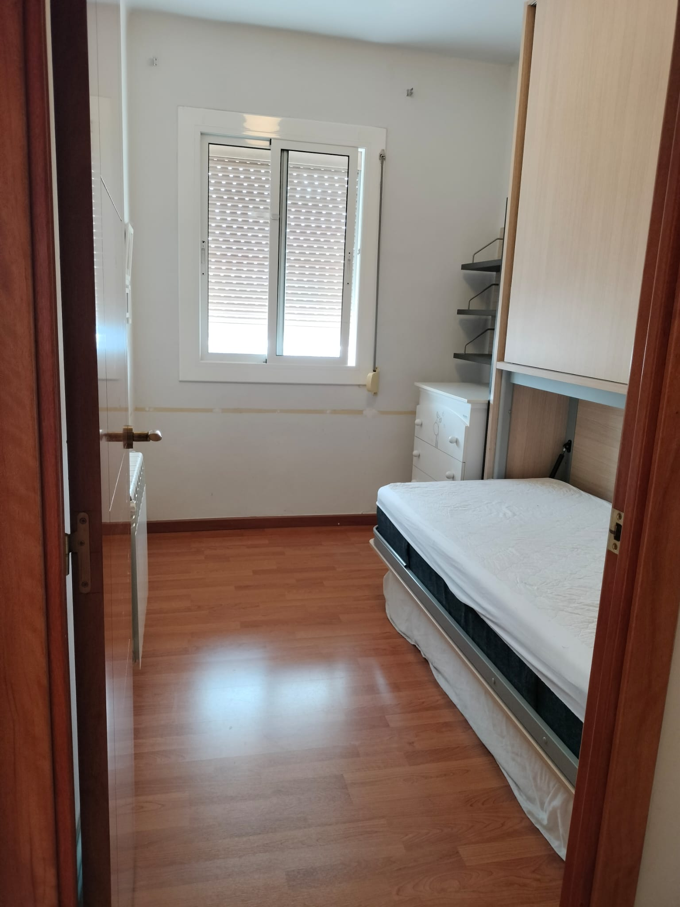
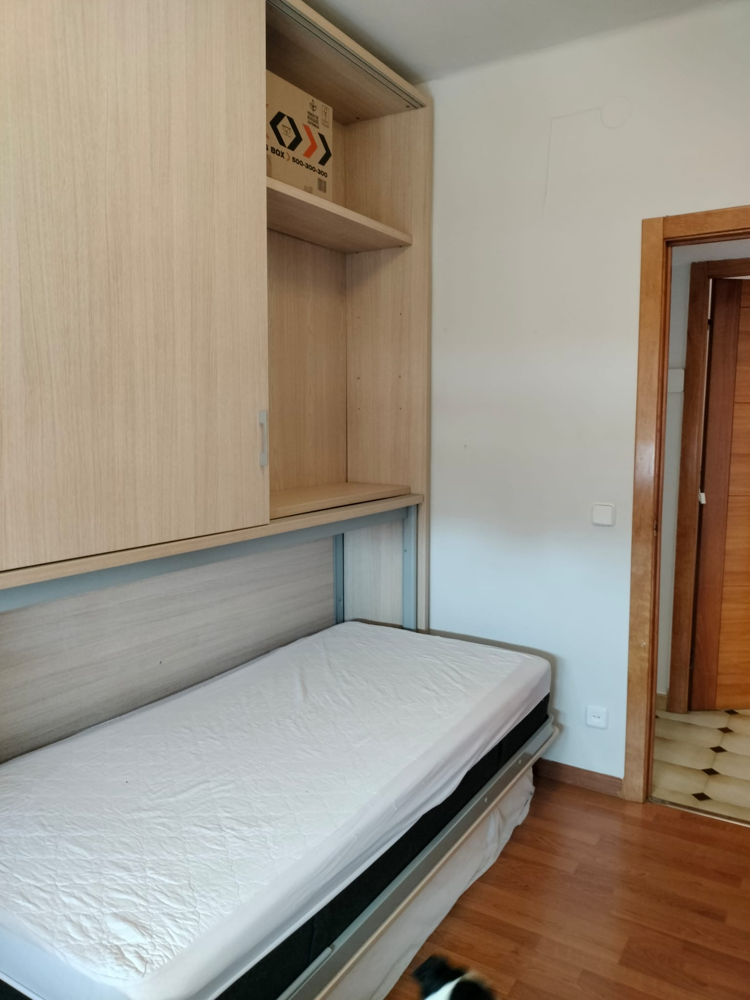
La zona
Distribución
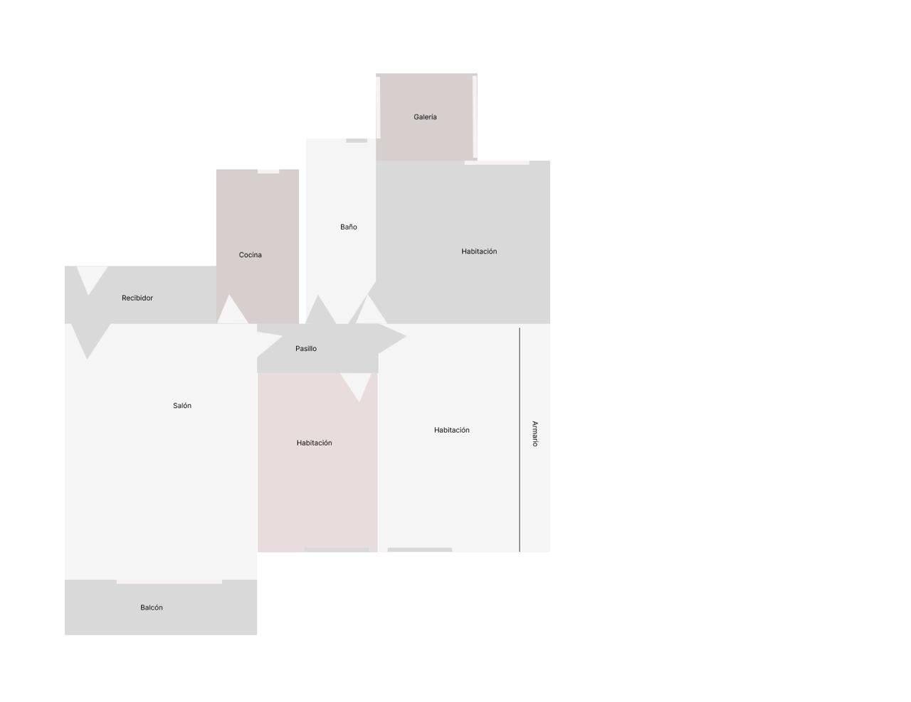
| Recibidor | 2,26 × 0,99 m |
| Salón / Comedor | 4,40 × 3,30 m |
| Cocina | 2,65 × 1,42 m |
| Habitación 1 (doble) | (2,99 × 2,80) + (0,71 × 1,00) m |
| Habitación 2 | 3,08 × 2,06 m |
| Habitación 3 | 2,37 × 3,99 m |
| Baño | 3,18 × 1,20 m |
| Distribuidor | 2,04 × 0,85 m |
| Galería | 1,74 × 1,50 m |
| Balcón | 3,30 × 0,95 m |
Superficie útil total: 57 m².
Planta 5ª con ascensor. Edificio de obra sólida de los años 80.
Calefacción central · Aire acondicionado · Comunidad 60 €/mes
¿Te interesa?
Visitas disponibles de lunes a sábado en el horario que mejor te venga. Respondemos con la mayor agilidad posible.
Venta privada durante las próximas semanas.
Este piso se mueve entre conocidos antes de salir al mercado. Si has recibido este enlace, tienes acceso prioritario.
Para concertar visita o pedir información, llama a Mónica directamente o pide su número a la persona que te ha pasado este enlace.
Detalles del inmueble
Carrer Mossèn Amadeu Oller, 38
La Bordeta · Sants-Montjuïc · Barcelona
57 m² · Planta 5ª · 3 hab. · 1 baño · Ascensor
Calefacción central · AA · Comunidad 60 €/mes